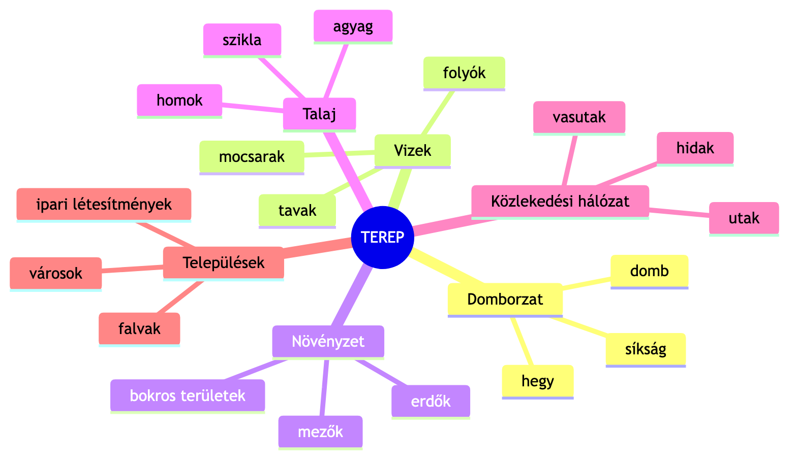
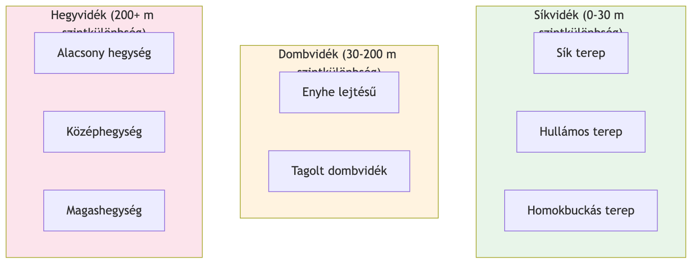
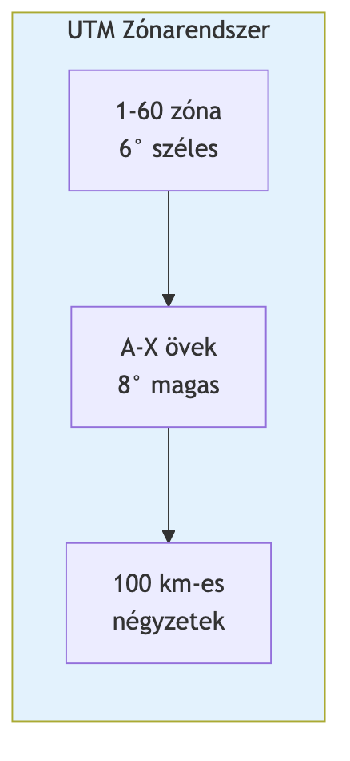
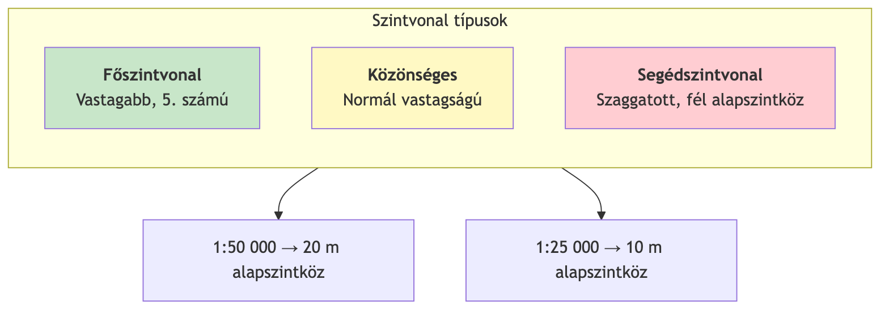
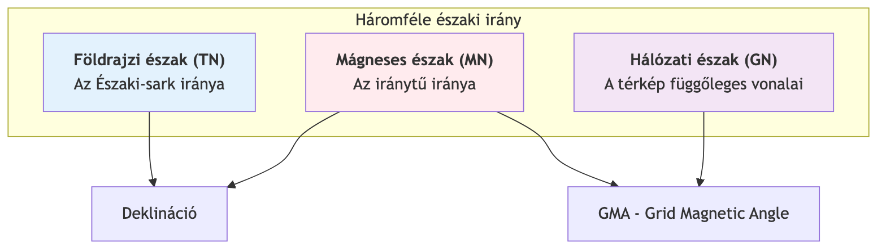
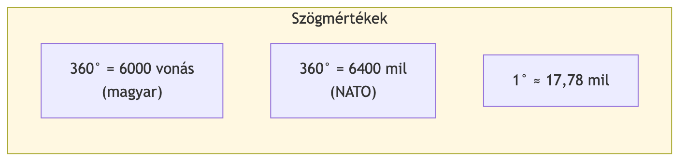
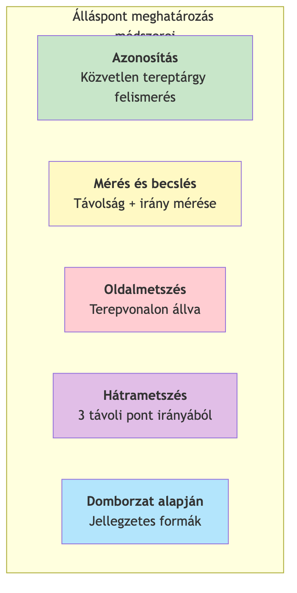
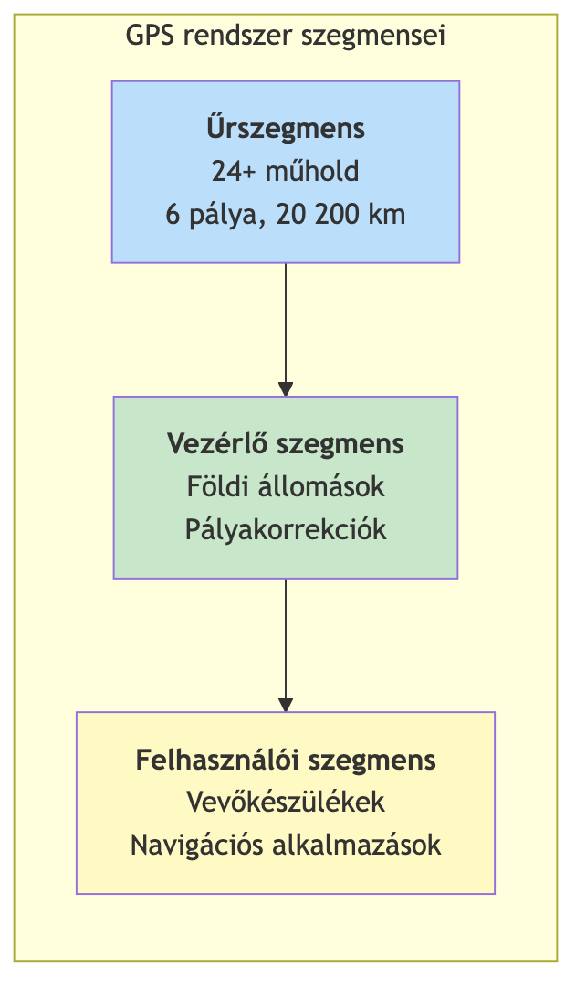
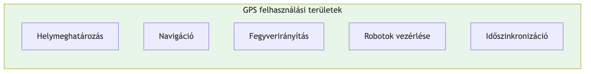

Katonai Tereptan
Kivonat és összefoglaló
Nemzeti Közszolgálati Egyetem
Hadtudományi és Honvédtisztképző Kar
Tanulmányi segédanyag
Tartalomjegyzék
- Tereptani Alapismeretek
- A terep fogalma és alkotóelemei
- Terepfajták
- Térképészeti Alapismeretek
- A térkép és méretarány
- Vetületi rendszerek (UTM, MGRS, GEOREF)
- Szintvonalak és térképjelek
- Tájékozódási Alapismeretek
- Világtájak és azimut
- A tájoló és használata
- Álláspont meghatározása
- Műholdas Helymeghatározás (GPS)
- A GPS működése és felépítése
- Gyakorlati alkalmazások
1. Tereptani Alapismeretek
1.1 Mi a terep?
A terep az a természetes és ember által alakított környezet, ahol a katonai tevékenységek zajlanak. Gondolj rá úgy, mint egy „játéktérre" – dombok, folyók, erdők, utak, épületek együttese, ami befolyásolja, hogyan lehet rajta mozogni és harcolni.
A terep a földfelszínnek az a része, ahol a katonai tevékenység folyik. A természeti tényezők és az emberi tevékenység eredményeként létrejött objektumok és képződmények összessége, amelyek meghatározzák és befolyásolják a katonai tevékenység körülményeit.
1.2 A terep alkotóelemei
A terep hat fő alkotóelemből áll, amelyek együttesen határozzák meg a katonai tevékenység lehetőségeit:

1. ábra: A terep hat fő alkotóeleme
1.2.1 Domborzat
A domborzat a földfelszín „hullámzása" – ahol a talaj megemelkedik vagy lejtősen ereszkedik. Ez határozza meg, honnan látunk messzire, és hol tudunk elbújni.
A domborzat a földkéreg legkülső, szilárd részének (litoszféra) egyenetlen felszíne. A terep legállandóbb jellemzője, ami hat a megfigyelésre, a tűzre, a mozgásra és a rejtőzködésre.
| Domborzati forma |
Jellemző |
| Hegytető/csúcs |
A környezetnél minden irányban magasabb pont |
| Gerincvonal |
Hegyek csúcsait összekötő vonal |
| Hátvonal |
Hegyoldal kidomborodó vonala |
| Völgyvonal |
Völgy legmélyebb vonulata |
| Nyereg |
Két magaslat közötti mélyedés |
1.2.2 További alkotóelemek
| Alkotóelem |
Leírás |
Katonai jelentőség |
| Vizek |
Folyók, tavak, mocsarak |
Akadály, ivóvízforrás |
| Növényzet |
Erdők, bokros területek |
Fedezék, mozgáskorlátozás |
| Talaj |
Homok, agyag, szikla |
Járhatóság, beásás |
| Közlekedési hálózat |
Utak, vasutak, hidak |
Gyors mozgás, kulcsobjektumok |
| Települések |
Városok, falvak |
Komplex harci környezet |
1.3 Terepfajták
A tereprészek magasságuk és jellegük alapján különböző típusokba sorolhatók:

2. ábra: Terepfajták osztályozása szintkülönbség szerint
| Terepfajta |
Szintkülönbség |
Jellemzők |
| Síkvidék |
0-30 méter |
Messzire ellátás, könnyű járműmozgás (pl. Alföld) |
| Dombvidék |
30-200 méter |
Enyhe emelkedők és völgyek (pl. Dunántúli-dombság) |
| Hegyvidék |
200+ méter |
Meredek lejtők, korlátozott mozgás (pl. Kárpátok) |
2. Térképészeti Alapismeretek
2.1 A térkép fogalma
A térkép a Föld felszínének kicsinyített „képe" papíron vagy képernyőn. Olyan, mint egy madártávlati fénykép, de egyezményes jelekkel.
A térkép a Föld felszínének – vagy egy részének – matematikai szabályok (vetületi rendszer) szerint szerkesztett, méretarányosan kicsinyített és egyezményes jelekkel ábrázolt képe.
2.2 Méretarány
A méretarány megmutatja, hogy a térkép mennyire van kicsinyítve. 1:50 000 azt jelenti, hogy 1 cm a térképen = 500 méter a valóságban.
| Méretarány |
1 cm a térképen = |
Típus |
| 1:25 000 |
250 m |
Nagyméretarányú |
| 1:50 000 |
500 m |
Közepes |
| 1:100 000 |
1 km |
Közepes |
| 1:250 000 |
2,5 km |
Kisméretarányú |
2.3 Vetületi rendszerek
2.3.1 UTM rendszer
A Földet 60 függőleges „szeletbe" (zónába) osztották, mint egy narancsot. Magyarország a 33. és 34. zónában található.
Az UTM (Universal Transverse Mercator) a Föld felszínét 60, egyenként 6° széles zónára osztó vetületi rendszer. Minden zóna saját derékszögű koordinátarendszerrel rendelkezik.

3. ábra: Az UTM zónarendszer felépítése
2.3.2 MGRS – Katonai Keresőhálózat
A katonák egy betű-szám kódot használnak a pozíció megadására. Például „34T DN 123 456" pontosan meghatároz egy helyet a térképen.
Az MGRS (Military Grid Reference System) az UTM rendszerre épülő katonai azonosítási rendszer, amely zóna, öv, 100 km-es négyzet és koordináták kombinációjával határozza meg a pozíciót.
MGRS kód felépítése
- 34T – UTM zóna és öv
- DN – 100 km-es négyzet azonosítója
- 123 456 – koordináták (keleti és északi érték)
2.3.3 GEOREF – Légi navigáció
A repülésben használt rendszer, amely betűkkel és számokkal azonosítja a légtereket.
A GEOREF (Geographic Reference System) a nemzetközi légi navigációban alkalmazott rendszer, amely a földfelszínt 15°×15°-os trapézokra osztja, betűkombinációkkal és számokkal azonosítva.
2.4 Szintvonalak – A domborzat ábrázolása
A szintvonalak olyan képzeletbeli vonalak, amelyek azonos magasságú pontokat kötnek össze. Ahol sűrűn vannak, ott meredek a terep; ahol ritkán, ott lapos.
A szintvonal (izohipsza) az azonos tengerszint feletti magasságú pontokat összekötő zárt görbe. Az egymást követő szintvonalak közötti magasságkülönbség az alapszintköz.

4. ábra: Szintvonal típusok és alapszintköz
2.5 Térképjelek és színek
| Szín |
Jelentés |
| Kék |
Vizek (folyók, tavak) |
| Zöld |
Növényzet (erdők) |
| Barna |
Domborzat (szintvonalak) |
| Fekete |
Mesterséges objektumok |
| Piros |
Utak, fontos objektumok |
3. Tájékozódási Alapismeretek
3.1 Világtájak és azimut
A világtájak (észak, dél, kelet, nyugat) a tájékozódás alapjai. Az azimut megmutatja, hogy egy irány hány fokra van északtól.
Az azimut az északi iránytól jobbra (az óramutató járásával megegyezően) mért vízszintes szög, amely kifejezi egy tereptárgy irányát a megfigyelő álláspontjához képest.
3.1.1 Háromféle északi irány

5. ábra: A háromféle északi irány és összefüggéseik
| Irány |
Jelölés |
Meghatározás |
| Földrajzi észak |
TN (True North) |
Az Északi-sark valódi iránya |
| Mágneses észak |
MN (Magnetic North) |
A mágnestű által mutatott irány |
| Hálózati észak |
GN (Grid North) |
A térkép függőleges vonalainak iránya |
Fontos fogalmak
- Deklináció: A földrajzi és mágneses észak közötti szögeltérés (Magyarországon kb. 4-5° keleti)
- GMA (Grid Magnetic Angle): A hálózati és mágneses észak közötti szög
3.2 A tájoló
A tájoló az iránytűt tartalmazó eszköz, amivel meghatározhatjuk az északi irányt és mérhetünk szögeket.
A tájoló a földi mágneses tér hatására beálló mágnestűvel működő műszer, amellyel a mágneses északi irány és a tereptárgyak irányai (azimutok) meghatározhatók.
3.2.1 Szögmértékek

6. ábra: Szögmértékek összehasonlítása
| Tájoló típus |
Beosztás |
Jellemzők |
| 39/49 M Bézárd |
6000 vonás |
Magyar fejlesztés, tükrös |
| Cammenga 3H (NATO) |
6400 mil |
Trícium világítás, zárható |
3.3 Álláspont meghatározása
Az álláspont meghatározása azt jelenti, hogy megtaláljuk saját pozíciónkat a térképen. Ehhez azonosítható tereptárgyakra és mérésekre van szükségünk.

7. ábra: Álláspont meghatározás módszerei
3.3.1 Hátrametszés
Ha nem tudjuk, hol vagyunk, de látunk három távoli, jól azonosítható pontot (torony, hegycsúcs), akkor azok irányából meg tudjuk határozni a helyzetünket.
A hátrametszés az a helymeghatározási eljárás, amelynél legalább három ismert tereptárgyra mért azimutok visszavetítésével határozzuk meg álláspontunk térképi helyét.
Végrehajtás lépései:
- Válasszunk 3 jól azonosítható távoli tereptárgyat
- Mérjük meg mindhárom mágneses azimutját
- Számítsuk át hálózati azimuttá (GMA korrekció)
- Szerkesszük fel a visszairányokat a térképre
- A metszéspont az álláspontunk
4. Műholdas Helymeghatározás (GPS)
4.1 A GPS működése
A GPS (Global Positioning System) olyan rendszer, ahol műholdak folyamatosan rádiójeleket sugároznak, és a vevőkészülék ezek alapján kiszámítja a helyzetünket – bárhol a Földön, bármikor.
A GPS (NAVSTAR Global Positioning System) a Föld körül keringő műholdak, földi vezérlőállomások és felhasználói vevőkészülékek alkotta globális helymeghatározó rendszer.
4.2 A GPS felépítése

8. ábra: A GPS rendszer három szegmense
| Rendszer |
Ország |
Műholdak |
Megjegyzés |
| GPS (NAVSTAR) |
USA |
24+ |
Legelterjedtebb |
| GLONASS |
Oroszország |
24 |
Orosz rendszer |
| Galileo |
EU |
30 (tervezett) |
Polgári célú |
| BeiDou |
Kína |
35+ |
Regionális+globális |
4.3 A helymeghatározás elve
A GPS úgy működik, mint a hátrametszés, csak műholdakkal. A vevő megméri, milyen messze van több műholdtól, és a távolságok metszéséből kiszámítja a helyét.
A GPS helymeghatározás kódkorrelációs eljáráson alapul: a vevő a műholdak által sugárzott rádiójelek beérkezési idejéből számítja a távolságokat, majd térbeli ívmetszéssel határozza meg a pozíciót.
Szükséges műholdak száma
- 3 műhold: 2D pozíció (szélesség, hosszúság)
- 4 műhold: 3D pozíció (+ magasság) és órahiba-korrekció
Pontosság: 10-20 méter (katonai célokra javítható)
4.4 GPS alkalmazások

9. ábra: GPS felhasználási területek
Katonai alkalmazások:
- Álláspont gyors meghatározása
- Célpontok koordinátáinak rögzítése
- Útvonalak rögzítése és visszakövetése
- Precíziós lőszerek irányítása
- Pilóta nélküli eszközök navigálása
Korlátozások:
- Épületek és erdők zavarják a jelet
- Szándékos zavarás blokkolhatja
- 10-20 méteres pontossági hiba
5. Összefoglaló táblázatok
A terep értékelése katonai szempontból
| Szempont |
Értékelési tényezők |
| Megfigyelés |
Rálátás, kilátás, belátás |
| Tűz |
Tüzelőállások, lőterek |
| Mozgás |
Járhatóság, akadályok |
| Rejtőzködés |
Fedezék, álcázási lehetőségek |
Koordinátarendszerek összehasonlítása
| Rendszer |
Típus |
Alkalmazás |
| Földrajzi |
Fok, perc, mp |
Általános |
| UTM/MGRS |
Méter |
Katonai |
| GEOREF |
Betű+szám |
Légi |
Helymeghatározási módszerek
| Módszer |
Szükséges eszköz |
Pontosság |
| Azonosítás |
Térkép |
Változó |
| Hátrametszés |
Tájoló + térkép |
Jó |
| GPS |
Vevőkészülék |
10-20 m |
Kulcsfogalmak jegyzéke
| Fogalom |
Meghatározás |
| Azimut |
Északtól jobbra mért vízszintes szög |
| Deklináció |
Földrajzi és mágneses észak eltérése |
| GMA |
Hálózati és mágneses észak szöge |
| MGRS |
Katonai keresőhálózat |
| Szintvonal |
Azonos magasságú pontokat összekötő görbe |
| UTM |
Univerzális Transzverzális Mercator vetület |
| Vonás |
Szögmérték (6000 vonás = 360°) |